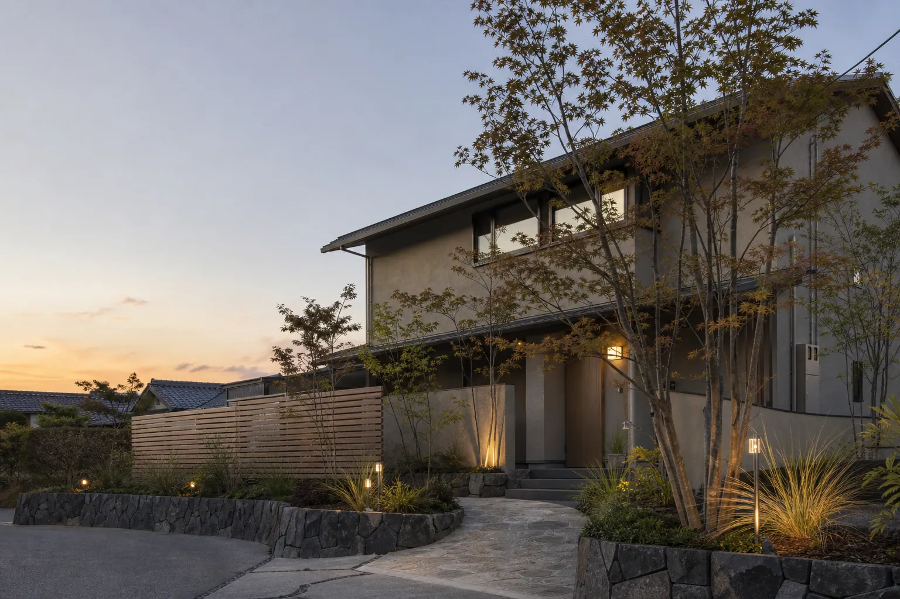
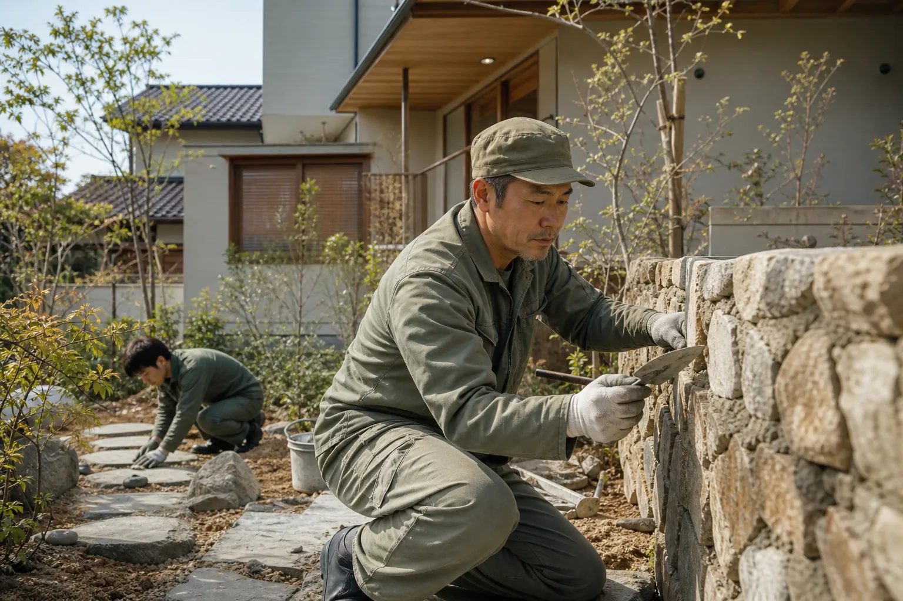
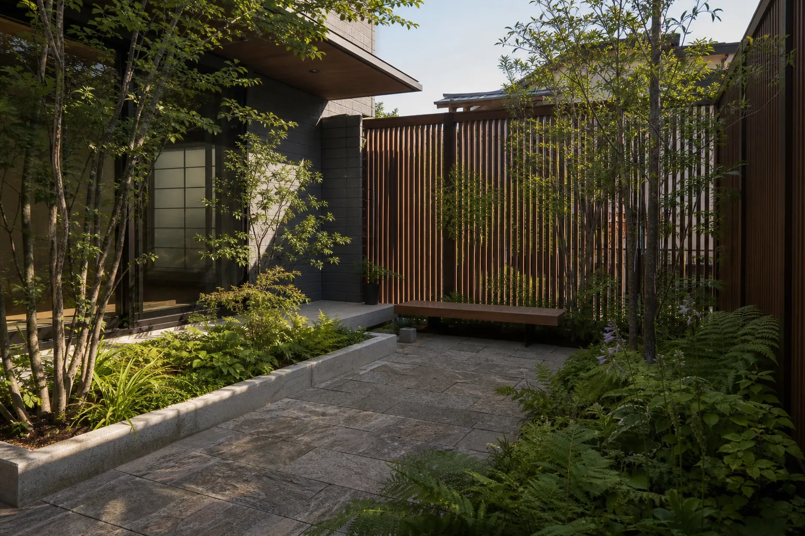
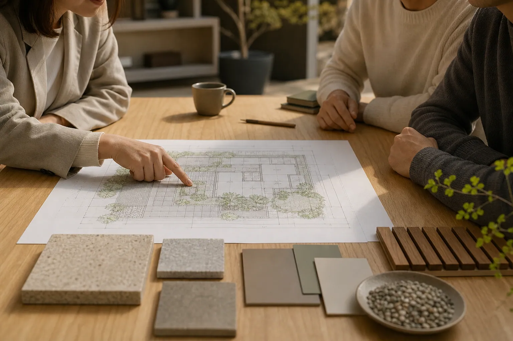

新築外構 スタンダード
約150万円〜（税込）
門柱・アプローチ・駐車場2台分の土間・境界フェンス・植栽を含む一般的なプラン例。

Exterior & Garden Design名古屋・尾張エリアの外構専門店
門まわり、庭、フェンス、外壁の塗り替えまで。
図面を描く人と、現場で手を動かす職人が同じチームにいる、
Concept私たちについて
外構は、家の「顔」であると同時に、毎日いちばん長く付き合う場所です。朝の出入り、洗濯物を干す動線、夜に帰ってきたときの足もとの明るさ。GREEN YARD は、そうした日々の動きを丁寧に聞き取ることから設計をはじめます。
見た目の美しさだけでなく、10年後の手入れのしやすさや、植物が育ったあとの景色まで考えたご提案を。図面を描く人と、現場で手を動かす職人が同じチームにいるからこそ、細部まで話が通じる施工ができます。


Serviceサービス
新築の外構から、既存のお庭のリフォーム、外壁・屋根の塗り替えまで。別々の業者に頼むと合わせにくい色や素材も、まとめてご提案できます。
門まわり、アプローチ、駐車場、フェンスまで。建物の外観と動線に合わせて、敷地全体を設計します。
色選びから下地補修、仕上げまで自社の塗装チームが担当。外構と調和する配色をご提案します。
シンボルツリーの選定から、手入れの少ない植栽計画まで。四季の移ろいを楽しめる庭をつくります。
リビングとつながるデッキや、雨の日も濡れずに乗り降りできるカーポート。暮らしの幅を外へ広げます。
Works施工例
名古屋市名東区／駐車場2台・アプローチ・植栽
春日井市／スリットフェンス・石張り・植栽
一宮市／外壁・屋根・付帯部塗装
長久手市／ウッドデッキ・パーゴラ・植栽
日進市／門柱・カーポート・ライティング
※掲載の施工例・地域名・工期・費用帯はポートフォリオ用の架空データです。
Price費用の目安
敷地の広さや素材によって金額は変わります。下記はよくご相談いただく内容の目安です。現地調査のうえ、項目ごとの明細でお見積りをお出しします。
約150万円〜（税込）
門柱・アプローチ・駐車場2台分の土間・境界フェンス・植栽を含む一般的なプラン例。
ご相談の多いプラン
約98万円〜（税込）
延床30坪前後の2階建て。足場・高圧洗浄・下地補修・シリコン系塗料3回塗りの例。
約35万円〜（税込）
約6㎡の樹脂木デッキ・ステップ付きの例。天然木や屋根付きもご相談ください。
※掲載の金額はポートフォリオ用の架空データです。実際の費用は現地調査後のお見積りでご確認ください。
Free Consultation
現地調査からプラン・お見積りまで無料です。「何から決めればいいか分からない」という段階からで大丈夫。しつこい営業はいたしません。
Flowお見積りの流れ
お見積りまでは無料です。プランをご覧いただいてからじっくりご検討ください。しつこい営業はいたしません。

お電話またはフォームからご連絡ください。ご希望やお悩みを簡単にうかがい、現地調査の日程を決めます。
敷地の寸法や高低差、日当たりを確認しながら、暮らし方やご予算をじっくりお聞きします。所要時間は1時間ほどです。
約2週間で、図面と3Dパースをご用意します。素材や色の実物サンプルを見ながら、納得いくまで調整します。
項目ごとの明細でお見積りをお出しします。「一式」でまとめず、何にいくらかかるかを分かりやすくご説明します。
ご近所へのご挨拶から自社の職人が担当。工事中は写真付きの報告で進み具合をお知らせします。
完成後も、1年後・3年後に点検にうかがいます。植栽の育ち方や塗装の状態もあわせて確認します。
Our Philosophy
木は育ち、石は色を深め、塗装はゆっくりと表情を変えます。だから私たちは、引き渡しの日がいちばん美しい外構ではなく、暮らしとともに馴染んでいく外構を設計します。
Voiceお客様の声
「建物ができてから外構を考えはじめたので不安でしたが、3Dパースで夜の照明まで確認できて安心でした。帰宅したとき、門まわりがふわっと明るいのが毎日うれしいです。」
「色見本を家の壁に当てて、朝と夕方で見え方を一緒に確認してくれました。塗り替えと同時にフェンスの色も合わせてもらい、家全体がまとまりました。」
「手入れが苦手なことを伝えたら、育ちすぎない木と下草を選んでくれました。ウッドデッキで朝ごはんを食べるのが週末の楽しみになっています。」
※掲載のお客様の声はポートフォリオ用の架空データです。
FAQよくある質問
名古屋市・尾張エリアであれば、現地調査・プランのご提案・お見積りまで無料です。ご契約に至らなかった場合も費用はいただきません。
はい、もちろんです。建物の図面や外観資料があれば、それに合わせてご提案します。ハウスメーカーさんのお見積りと比較検討いただくこともできます。
外壁の色とフェンスや門柱の素材を同時に決められるため、家全体の色合わせがしやすくなります。足場の設置時期を調整できる場合もあり、工程もまとめやすくなります。
新築外構で3〜5週間、外壁・屋根の塗り替えで2〜3週間が目安です。天候や工事内容により前後しますので、着工前に工程表をお渡しします。
施工内容に応じた自社保証をご用意しています（保証の範囲・期間は工事内容により異なります）。お引き渡し後は1年・3年の定期点検にうかがいます。
はい、小さな工事もお受けしています。将来まとめて手を入れる予定があれば、今回の工事がその妨げにならないよう、全体の構想も一緒にお話しします。
Company会社案内
石材・タイル・フェンス材・塗料の色見本をそろえた小さなショールームがあります。ご来店の際は事前にご予約いただくと、担当者がご案内します。
| 会社名 | 株式会社グリーンヤード |
|---|---|
| 所在地 | 〒000-0000 愛知県名古屋市〇〇区〇〇1-2-3 |
| 電話 | 0120-000-000／052-000-0000 |
| メール | info@example.jp |
| 営業時間 | 9:00〜18:00（水曜・第2日曜定休） |
| 事業内容 | 外構・エクステリアの設計施工、造園・植栽、外壁・屋根塗装 |
| 許可・資格 | 建設業許可取得済み（番号は架空サイトのため省略） 1級エクステリアプランナー在籍 |
| 対応エリア | 名古屋市、尾張旭市、春日井市、長久手市、日進市、一宮市ほか尾張エリア |
Contactお問い合わせ
内容がまだ決まっていなくても大丈夫です。気になっていることをお気軽にお書きください。2営業日以内にご連絡します。
お電話でのご相談0120-000-000受付 9:00〜18:00（水曜定休）